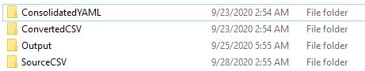
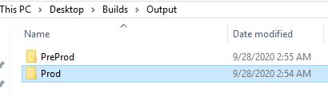

Big Bang
Choose a build file to create YAML
Guidelines to follow while submitting for build
1. Source Files

All the selected source files will be under folder "SourceCSV" Consolidated file will be named PreProd.csv and Prod.csv resptive to the env choosed. As shown in the picture column "Name" (Case sensitive) is required with the main producer name not the one's with _1 or _2. Script will remove them before converting it to YAML. Donot add any more columns than "Name" (such as RITM as similar for CR generation) this will result in failure.
2. Desktop/Output Folders
Each time a build script ran depending on the environment, it will clean up the space in desktop and start running the script. Converted CSV folder have the final producer wise sorted build sheet to convert it to YAML.
3. Validation and verification
Check the respective environment folder under Output folder to validate the final output files
General Instruction
- Always submit mainframe separately
- If any new consumers builds are there, submit Mainframe at last!
- Make sure to select the appropriate environment before starting the build procedure
- Check your Desktop folder named "Builds" for validation and final output files
- Make sure to clear fields before or after submitting any build files
- Make sure check for any errors in Atom (Build validator) before start using this build process. Atom will make sure to reduce any build mistakes